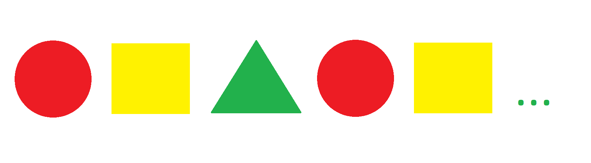
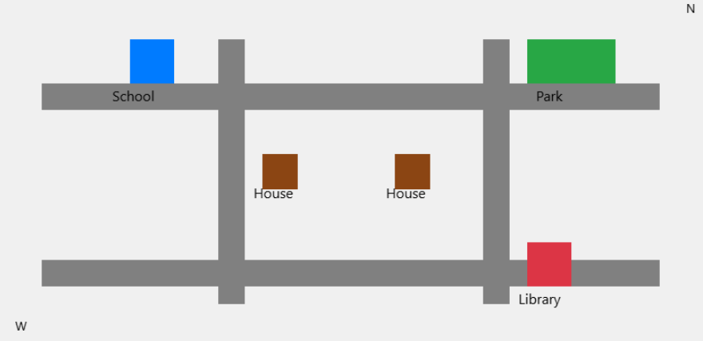

GENIUS
0/5 answered
Question 1 of 5
If you have 3 groups with 4 apples in each group, how many apples do you have in total?
Read Aloud
Simplify Question
7
12
9
8
Next
Question 2 of 5
Read the short paragraph:
Maya has a garden with red roses and yellow sunflowers. Every Monday, she waters the garden for 10 minutes. On Fridays, she adds new soil to help the plants grow taller. The sunflowers are now taller than Maya!
What day does Maya water her garden?
Read Aloud
Simplify Question
Sunday
Monday
Friday
Wednesday
Previous
Next
Question 3 of 5
Explain why plants need sunlight to grow. What do you think would happen to a plant placed in a dark closet?
Read Aloud
Simplify Question
Use Voice
Previous
Next
Question 4 of 5
Look at the pattern below. What comes next in the sequence?
Read Aloud
Simplify Question

Look at the shapes in order and decide what shape should come next in the pattern.
AI Discussion Assistant
Use Voice
Previous
Next
Question 5 of 5
Look at this simple map of a neighborhood. You will be asked questions about it.
Read Aloud
Simplify Question

Study the map carefully. You will be asked questions about locations and directions.
AI Discussion Assistant
Use Voice
Previous
Submit Assessment
Listening to your answer...
Stop Recording